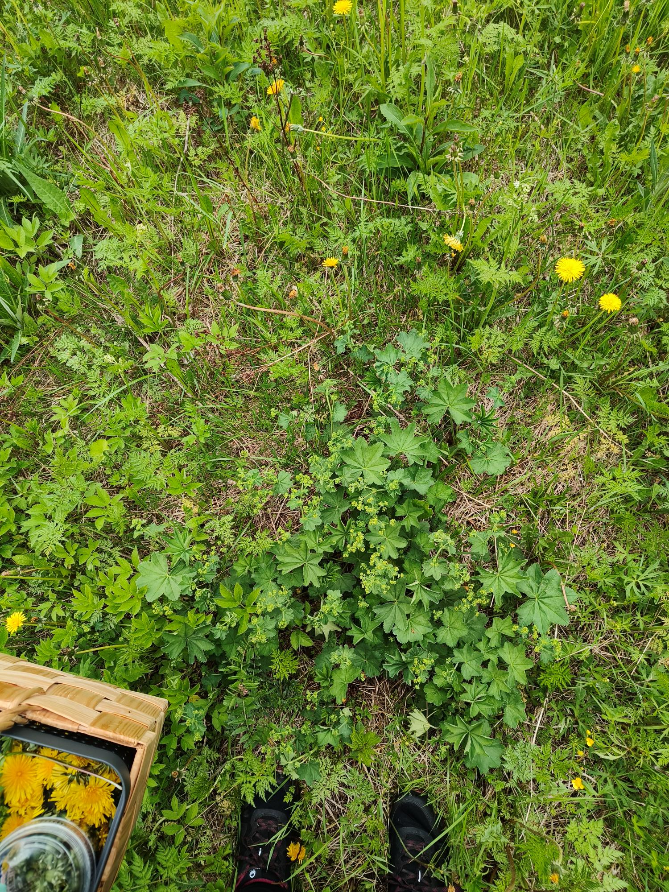
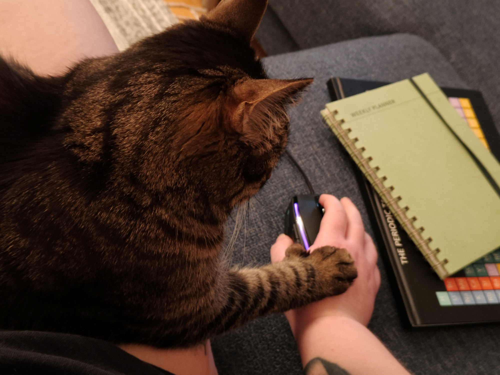
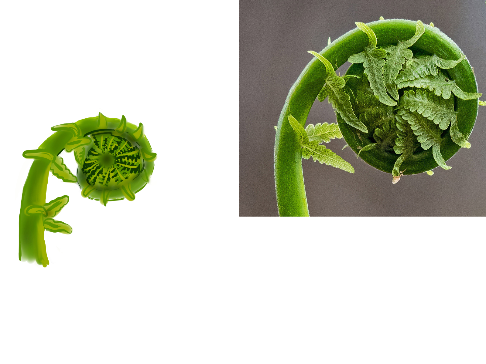
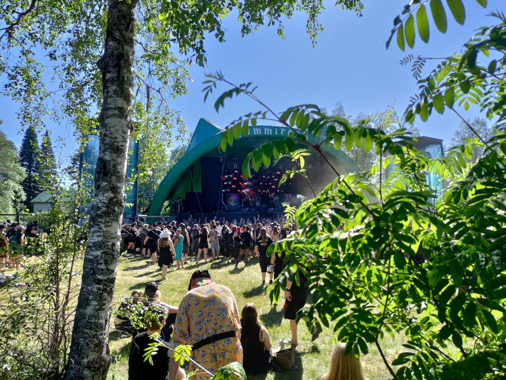

Luontoa, luovuutta ja livemusiikkia
Pidän luonnossa liikkumisesta ja erityisesti keräilystä – kuivaan kasveja teeksi sekä mausteeksi ja kerään marjoja, joista teen hilloja ja muita hyödykkeitä. Tällä hetkellä kupissani on mustikanlehtiteetä, joka tuo näin loskaisessa maaliskuussa kesän maun suuhun. Kevät on lempiaikaani vuodesta, kun luonto herää eloon ja pääsee taas mökille. Kesällä nautin nokosista laiturilla. Syksyisin sieniä on hauskempaa kerätä kuin syödä, joten ilahdutan saaliillani läheisiä joko puhdistetuin, kuivatuin tai pakastetuin sienin, jollen keräilyltäni malta leipoa piirakkaa.

Nautin ajastani kotosalla kissani Rommin kanssa. Hän on kymmenvuotias ja omistaa liikavarpaita, josta on saanut lempinimen ”Peukaloinen”. Kumppanini nimi kissalle on kuitenkin ”Plötsis”, joka juontaa juureensa kummalliseen tapaan kököttää leuka pitkällä.

Kotona kuuntelen paljon musiikkia, puuhastelen sitten keittiössä tai palapelin tai maalauksen parissa. Vaihtelevan innostuksen kohteen mukaisesti virkkaan, neulon tai ompelen. Valokuvaustaustaa löytyy, eikä järjestelmäkameran käyttö ole vierasta. Olen myös harrastanut piirtämistä sekä paperille että digitaalisesti; alla piirros malleineen (© Marianna Armata/Getty Images) osana vuoden 2022 päivittäistä piirtohaasteetta aiheenaan "fiddlehead" eli saniaisenverso.

Luovuus miussa näkyy myös päällepäin. Nykyisin arkimeikkini on hillitympi tai olematon, mutta silloin tällöin meikkaan vahvasti, jos lähden vaikka katsomaan livemusiikkia. Viimeisimpiä näkemiäni bändejä ovat WÖYH! sekä esimerkiksi My Dying Bride ja Vermilia Dark River-festivaaleilta. Nautin suuresti musiikin livekuuntelusta ja faniyhteisöllisyys erityisesti Lordin kautta on aivan mahtavaa.
